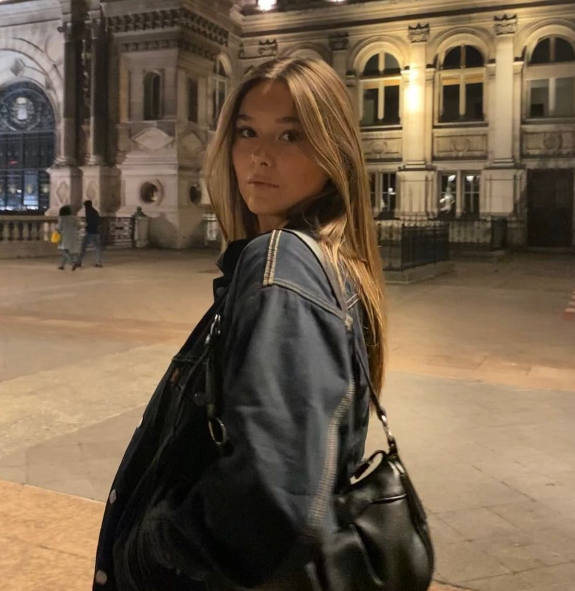

Hello everyone, it's Juliette !
I took the “Le Wagon” classes. I improved my computer coding skills. Now I am able to code and create my profile the way I want. In the courses we learn HTML and CSS code. CSS language is useful for the layout of our profile, it is infinitely customizable. We are free to create it according to our preferences.
Discover Le WagonAnime / Manga
I am a big fan of manga and anime. Since I was little, I have never stopped discovering new foods and anime. Whether it's a story with adventure, mystery or love, all styles interest me. I like with complete manga collections. I enjoy going to trade shows and conferences so I can share my passion with people who have the same interest.
Fashion
I have a second passion in my life: fashion. I love imagining outfits with the clothes in my wardrobe. Additionally, when I go shopping, before buying an item, I imagine several outfits with it. I like to vary my clothing styles. Wearing clothes that I like makes me feel good about myself because I am myself.